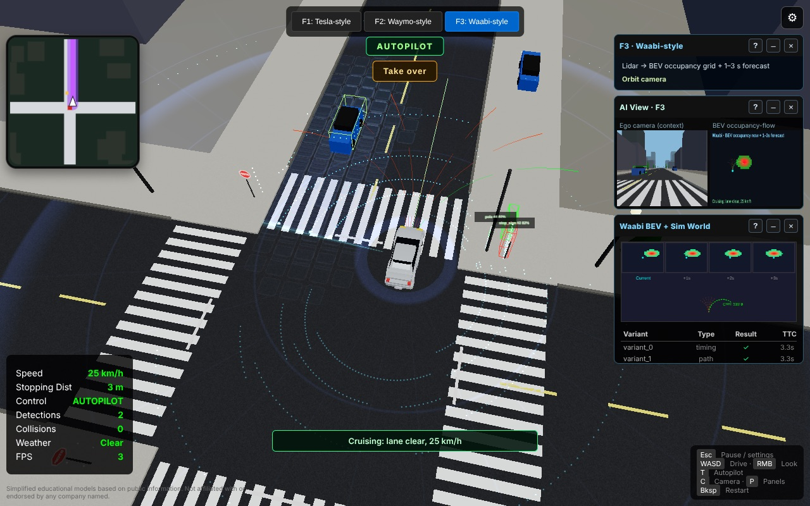
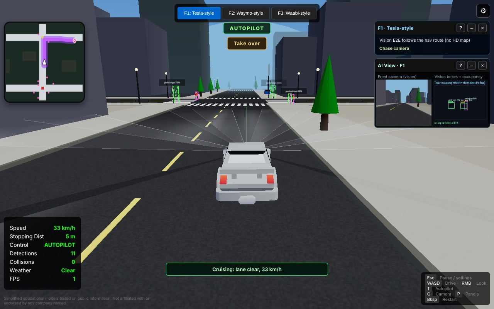
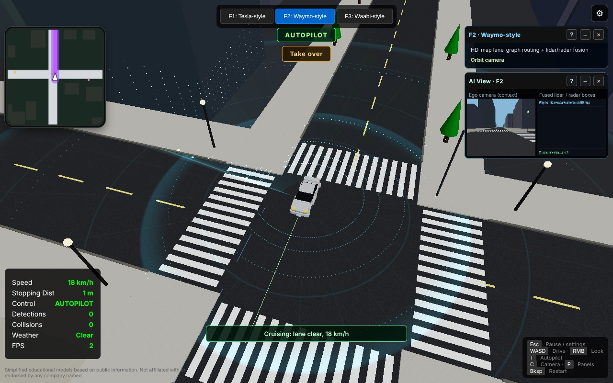

Autonomy City: learning how self-driving cars see
I kept reading about Tesla vs Waymo and honestly didn't get what the cars actually see. So I built a little city in the browser where a car drives itself, and you can flip between 3 different ways of seeing the same street. Click below and try it.
▶ Play Autonomy City Runs in your browser. Use a laptop, you need a keyboard.

Quick disclaimer first. This is NOT Tesla's, Waymo's, or Waabi's software. It's my simplified version, based on what they say publicly. They have nothing to do with it.
Stack for the nerds: TypeScript + Three.js for the city, Rust compiled to WebAssembly for the lidar rays, and a Python pipeline that trains small models on what the cars record.
Same street, 3 ways of seeing it
Press F1, F2, or F3 and you're not just changing the overlay. Each one has its own planner, so the car literally drives differently based on what it's allowed to see.
F1 – Tesla-style (cameras only)
Tesla says it doesn't need lidar, radar, or detailed HD maps. So this car only gets cameras. It draws boxes around what it sees, builds a rough picture of what's around it, and follows the nav route kind of like you following Google Maps.

Biggest takeaway: if the camera can't see it, it doesn't exist. Put a pedestrian behind a parked car (press 2 in the game) and you'll see what I mean.
F2 – Waymo-style (lidar + radar + HD map)
Waymo's 6th gen car has 13 cameras, 4 lidars, and 6 radars. That's a lot of hardware. It also only drives where it's already mapped the streets in detail. In the game you get a full 360° lidar scan around the car, radar pings, and it all gets combined into one set of boxes. It drives on a pre-built map of the lanes instead of figuring out the road live.

This one got me. A lidar scan isn't instant, and the car keeps moving while it's scanning. My first version just drew the points wherever the car was right now, so dots slid under the car and trailed behind it. Turns out real AV stacks deal with this too. You have to place each scan where the car was when it took it.
F3 – Waabi-style (predicting the future)
Waabi calls itself "AI-first" and trains a ton in its own simulator. Here the car turns lidar into a top-down grid, predicts that grid 1–3 seconds ahead, and picks a path from a bunch of options based on where things will be. It also replays the same moment with small changes, like the jaywalker stepping out a bit earlier, to see when the plan breaks.
The boring part that actually matters
Most of self-driving isn't the car. It's the loop that makes the car better every week. So I built a mini version:
- Record drives (in the browser, or headless in Node)
- Pull out the interesting moments → takeovers, missed detections, near-misses
- Label them with a fake labeling vendor that makes mistakes on purpose, then QA to catch them
- Split by scenario so you're not testing on stuff you trained on
- Train a perception model and a driving policy in PyTorch
- Only ship the new model if it beats the old one, then export it to ONNX
The perception model got an F1 of 0.99 vs 0.62 for my hand-written rules. Sounds great, but let's be real. It's simulated data, clean shapes, and everything in the test set was close to the car. Real roads are WAY harder. The point was learning the loop, not breaking records.
What I learned
- Your sensors decide everything. The planner is only as good as what it can see.
- HD maps make driving easier, but you're stuck wherever you've mapped. Waymo city by city, Tesla anywhere (in theory).
- Seeing a pedestrian is easy. Knowing if they're about to step out is the actual hard problem.
- The data loop is the real product. Mining, labeling, QA, and deciding what ships matter more than any one model.
Honestly, it's the same lesson I keep learning building AI agents for clients at Rocket Agency. The model is only part of it. Testing it, fixing the data, and knowing when it's safe to put in front of real people is the rest.
Go drive it around and let me know what breaks. DM me on X!